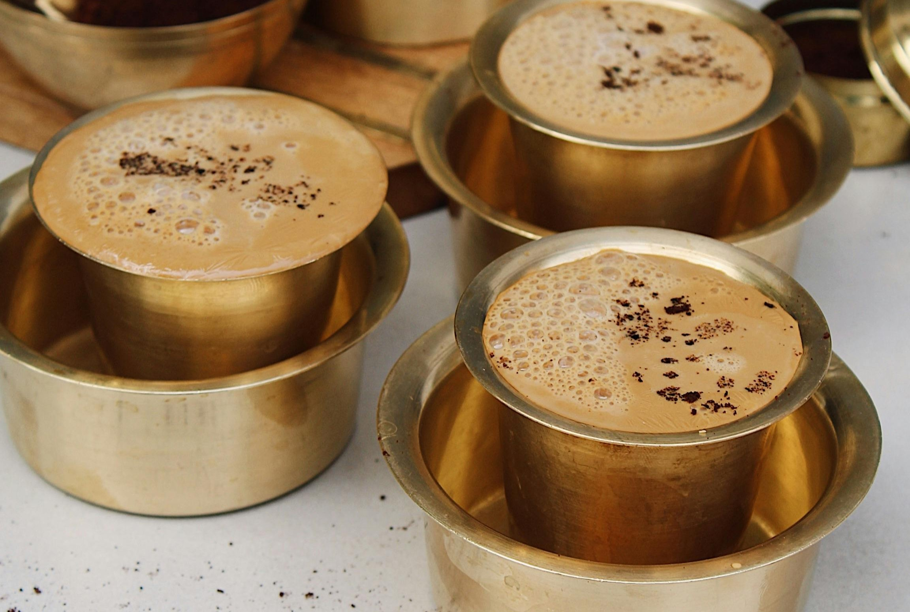

ABOUT

Filter Copy is a unique café that features traditional South Indian Filter Kaapi (coffee) with modern twists, to create a unique experience. The café aims to introduce coffee lovers to the classic filter coffee, while appealing to a diverse audience through an innovative menu. The bakery is to have a unique menu as well, offering South Indian bakery products such as Spicy Buns and Egg Puffs. With a vibrant ambiance, and a focus on high-quality ingredients, the café hopes to offer a memorable experience.

Filter kaapi, also known as Indian filter coffee, is a traditional South Indian coffee prepared using a two-stage filtration process. Coarsely ground coffee beans, typically a blend of Arabica and Robusta varieties, are placed in a metal filter and brewed slowly with hot water, allowing the coffee to drip through over several hours. The resulting strong, concentrated decoction is then mixed with hot milk and sugar according to personal taste. Served in small steel tumblers and wide-bottomed cups, filter kaapi is known for its rich, aromatic flavor and creamy texture, making it a beloved staple in Indian households and coffee shops alike.
.jpg)